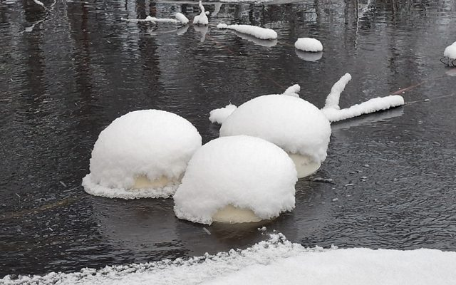
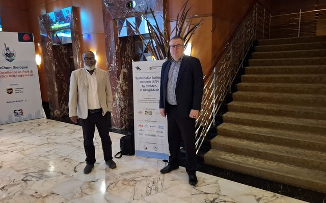
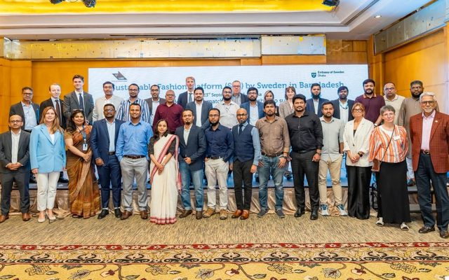
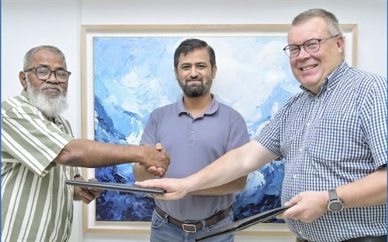
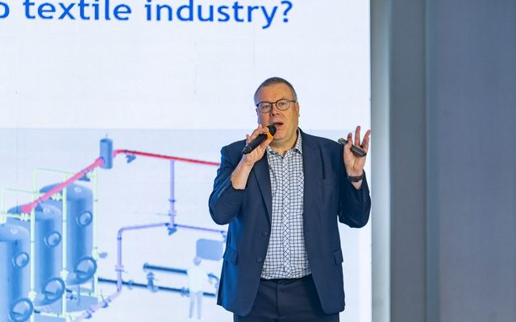
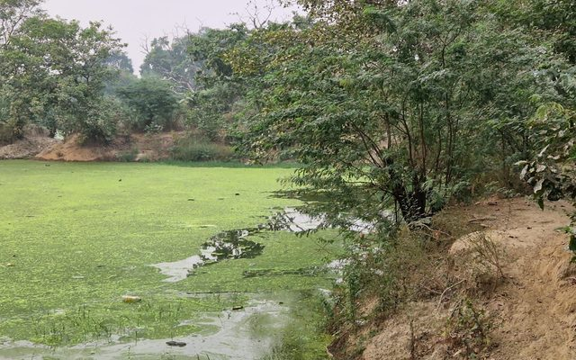
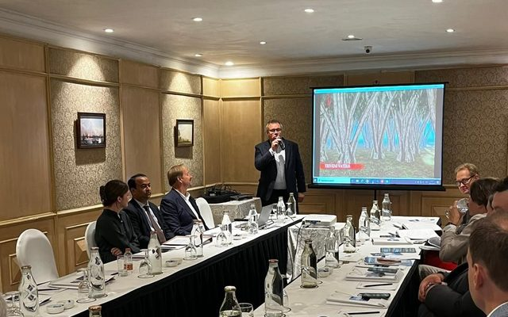
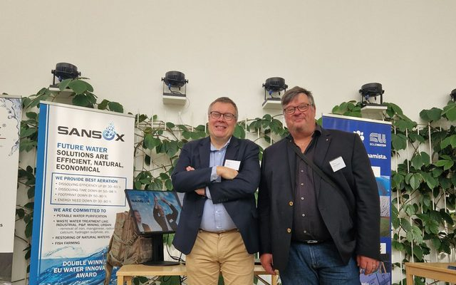
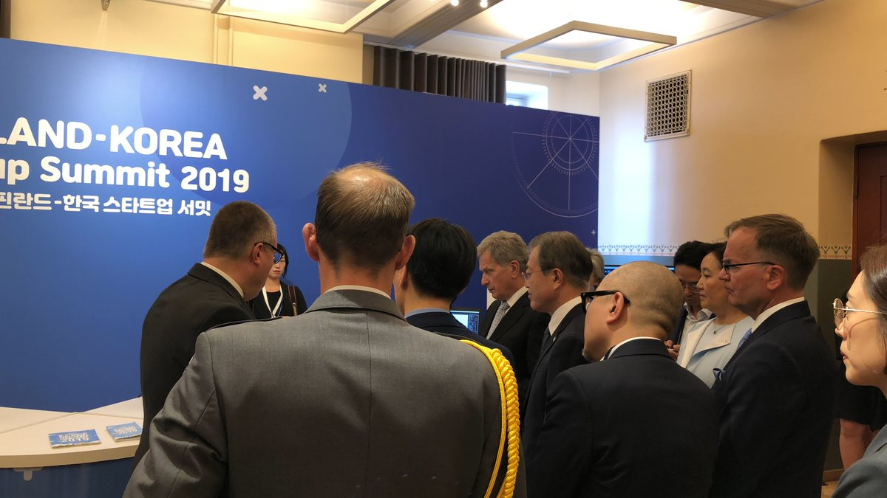

Desde el terreno.
Catorce crónicas, 2019–2026: estanques salvados, agua textil en Bangladés y Pakistán, el premio Baltic Sea Project — y el trabajo farmacéutico tras los números de Kuopio. Vídeos en YouTube.YouTube.
Del terreno — el hilo de noticias
Residuos farmacéuticos
2026-03-11
La directiva europea de aguas residuales hace obligatoria la eliminación de micropolutantes, y la industria farmacéutica y cosmética paga al menos el 80 % del coste. Un ensayo en la depuradora de Salo con el THL y Savonia eliminó hasta el 100 % de los fármacos y toda la E. coli.
Leer el artículo →

Otro estanque por salvar — aireación de lagos y estanques en acción
2026-01-19
El siguiente estanque entra en tratamiento: el mismo enfoque de aireación en línea usado en Sukhrali, aplicado a una nueva masa de agua.
Leer el artículo →

SansOx participó en SFP-25 by Sweden en Bangladés y Pakistán
2025-10-20
SansOx presentó sus soluciones para agua textil en SFP-25 by Sweden, reuniéndose con marcas y fabricantes en Bangladés y Pakistán.
Leer el artículo →

La gira de depuradoras continúa a Pakistán tras Bangladés
2025-10-10
La gira por depuradoras continuó de Bangladés a Pakistán: aguas residuales de tintorería y objetivos de vertido líquido cero, sobre el terreno.
Leer el artículo →

SansOx une fuerzas con socios en el mercado textil de Bangladés
2025-06-26
Se firmó un MOU para una empresa conjunta con Charm y Colormatch para la eliminación de residuos de tinte en el mercado textil de Bangladés, tras los resultados mostrados en DTG 2025.
Leer el artículo →

Empresas nórdicas en la Sustainable Fashion Platform, Bangladés
2025-02-26
SansOx se unió a otras empresas nórdicas en la Sustainable Fashion Platform — un trabajo respaldado por compradores como H&M, IKEA y Lindex.
Leer el artículo →

Noticias de Sukhrali
2025-02-26
Novedades del estanque de Sukhrali: la recuperación continúa con MICADA, la India National Water Foundation, la ciudad de Gurugram y la Embajada de Finlandia implicadas.
Leer el artículo →
Itämeri · FILa solución de SansOx impide que los residuos farmacéuticos lleguen al Báltico
2024-12-05
En finés: cómo el tratamiento de ozono OxTube puede impedir que los residuos farmacéuticos — unos 1,8 millones de kg al año — lleguen al mar Báltico.
Leer el artículo →

SansOx presentó el último proyecto de recuperación de lagos en la India
2024-10-04
Presentado el último proyecto de recuperación de lagos en la India: la aireación como primer paso para devolver la vida a un lago eutrofizado.
Leer el artículo →

SansOx en la Mikkeli Water Week
2024-10-04
Soluciones presentadas en la Mikkeli Water Week, incluida la configuración de clarificación patentada ClariOx.
Leer el artículo →
ItämeriCon sus socios, ganador del Baltic Sea Project de este año
2024-04-29
Con la ciudad de Salo, el THL (Instituto Finlandés de Salud y Bienestar) y Savonia UAS, SansOx ganó el Baltic Sea Project de este año: eliminación de residuos farmacéuticos y microbios con ozono.
Leer el artículo →
Aguas naturalesProyecto de lago en la aldea de Sadpura, estado de Haryana
2024-04-18
Comienza un nuevo proyecto de lago en la aldea de Sadpura, estado de Haryana — la cartera india crece más allá de Gurugram.
Leer el artículo →
PrensaSansOx en el periódico norcarelio Karjalainen
2024-04-18
El periódico Karjalainen retrata a SansOx: más de 100 instalaciones en una veintena de países.
Leer el artículo →

Cumbre de startups Finlandia–Corea 2019
2019
SansOx en el Finland–Korea Startup Summit de 2019. Foto del archivo de sansox.fi.